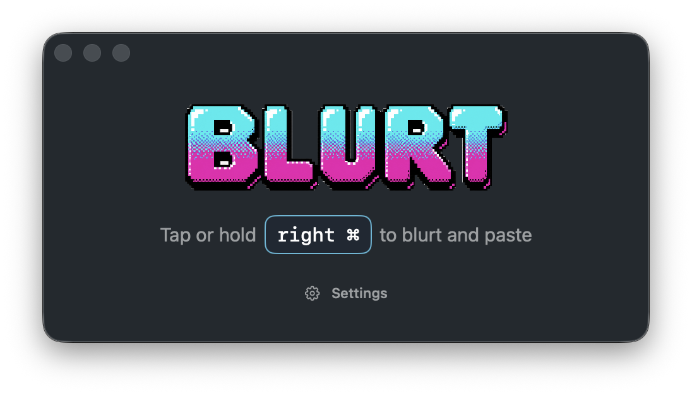

Under 100 ms
AssemblyAI's Sync STT model responds in under 100 milliseconds, so text lands about as soon as you stop speaking.
Blurt is a small, native Mac app for Apple Silicon. Tap or hold a key, speak, and polished text lands in the app you're already using — no model downloads, no separate cleanup pass.
Requires macOS 26 or later on Apple Silicon, plus a free AssemblyAI API key.

Features
AssemblyAI's Sync STT model responds in under 100 milliseconds, so text lands about as soon as you stop speaking.
Transcription runs on the world's most accurate speech-to-text model — trained for real speech, not demo speech.
Dictate in the language you think in. Blurt works in 18 languages out of the box.
The transcript is pasted straight into the focused Mac app — email, code, chat, anywhere with a cursor.
Audio goes out, clean text comes back. One API call — no model downloads and no second LLM pass over your words.
Start and stop are cued by real Yamaha DX7 and Roland Juno-106 sounds. Or turn them off and dictate in silence.